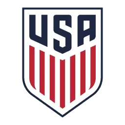
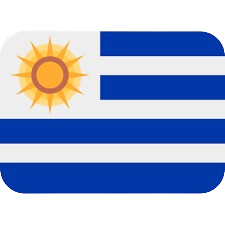
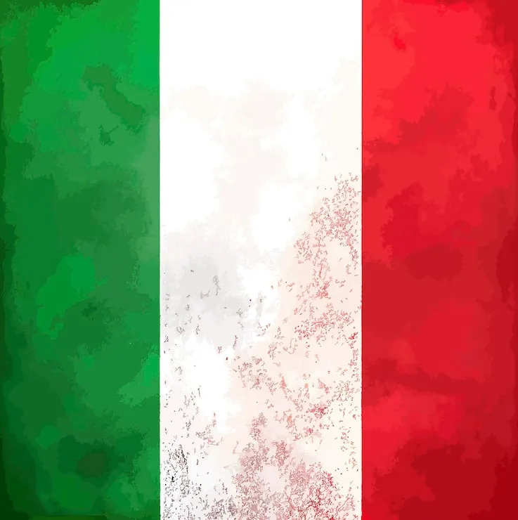
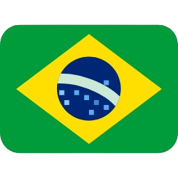

Estados Unidos
Estados Unidos
11
Participações
(1930-2022)

América do Norte
A seleção dos Estados Unidos de futebol é a equipe nacional que representa os Estados Unidos nas competições internacionais de futebol. Embora o futebol não seja o esporte mais popular do país, a seleção norte-americana tem uma longa história em Copas do Mundo e é uma das principais forças da CONCACAF. Os Estados Unidos conquistaram destaque internacional ao alcançar as semifinais da primeira Copa do Mundo, em 1930, resultado que permanece como sua melhor campanha na competição. Nas últimas décadas, o país investiu fortemente no desenvolvimento do futebol, impulsionado pela criação da Major League Soccer (MLS) e pelo crescimento da modalidade entre os jovens. A seleção é conhecida por seu estilo de jogo físico, organizado e intenso, tendo revelado jogadores importantes como Landon Donovan, Clint Dempsey, Tim Howard, Christian Pulisic e Weston McKennie. Como um dos países-sede da Copa do Mundo de 2026, os Estados Unidos buscam consolidar seu crescimento e voltar a disputar posições de destaque no cenário mundial.
Goleiros:
Defensores:
Meio-campistas:
Atacantes:
Participações
(1930-2022)
Títulos
Melhor campanha
Primeira
participação
| Ano | Sede | Resultado |
|---|---|---|
| 1930 |
 Uruguai |
3º lugar |
| 1934 |
 Itália |
Fase de Grupos |
| 1938 |
|
Fase de Grupos |
| 1950 |
 Brasil |
Fase de Grupos |
| 1990 |
Itália
|
Fase de Grupos |
| 1994 |
|
Oitavas de Final |
| 1998 |
|
Fase de Grupos |
| 2002 |
|
Quartas de FInal |
| 2006 |
|
Fase de Grupos |
| 2010 |
|
Oitavas de Final |
| 2014 |
Brasil
|
Oitavas de Final |
| 2018 |
|
Oitavas de Final |
| 2022 |
|
Oitavas de Final |
| Participações | 12 |
| Títulos | 0 |
| Vice-campeonatos | 0 |
| 3º Lugar | 2 |
| 4º Lugar | 0 |
| Melhor campanha | 3º Lugar |
| Jogos disputados | 37 |
| Vitórias | 9 |
| empates | 9 |
| Derrotas | 19 |

calendar_month Junho - Julho de 2026
location_on México, Estados Unidos e Canadá